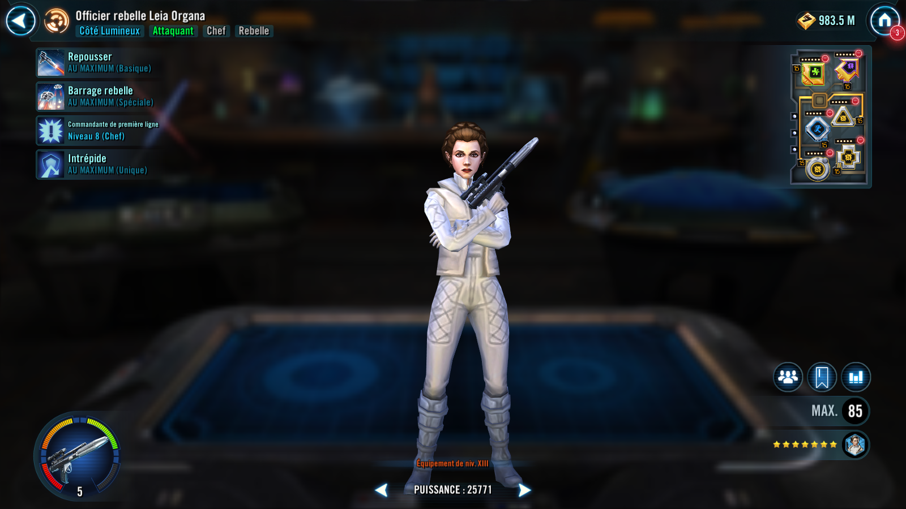

Rebel Officer Leia Organa
Tenacious Rebel Attacker that counters debuffs and is more effective against healthy targets
Tenacious Rebel Attacker that counters debuffs and is more effective against healthy targets

Deal Physical damage to target enemy and inflict Buff Immunity for 2 turns. Leia gains 10% Turn Meter, an additional 10% Turn Meter if the target had full Health, and an additional 10% Turn Meter if the target is Empire.
Deal Physical damage 10 times to random enemy targets. Enemies struck more than once suffer Ability Block for 1 turn. This ability's cooldown is reduced by 1 whenever Leia scores a Critical Hit or suffers a debuff. These attacks can't be Countered.

Rebel allies have +20% Critical Chance and Tenacity. Whenever a Rebel ally takes damage from an Empire enemy they have a 50% chance to gain Foresight for 2 turns. The first time each turn a Rebel ally resists a detrimental effect or suffers a debuff from an enemy, they gain 30% Turn Meter.
Omicron Boost : While in Territory Battles: Rebel allies have +35% Speed. Rebel allies recover 100% Health and Protection at the start of each encounter and whenever another Rebel ally is defeated. Whenever a Rebel ally critically hits an enemy, all Rebel allies gain 5% Turn Meter, doubled if it's their turn. Whenever a Rebel ally is defeated, all Rebel allies gain 100% of that ally's Offense (stacking) until they're defeated.
Leia has +10% Offense and +40% Tenacity. The first time each turn Leia Resists a detrimental effect or suffers a debuff she gains 15% Turn Meter and gains 35% Offense (stacking) until the end of her next turn.